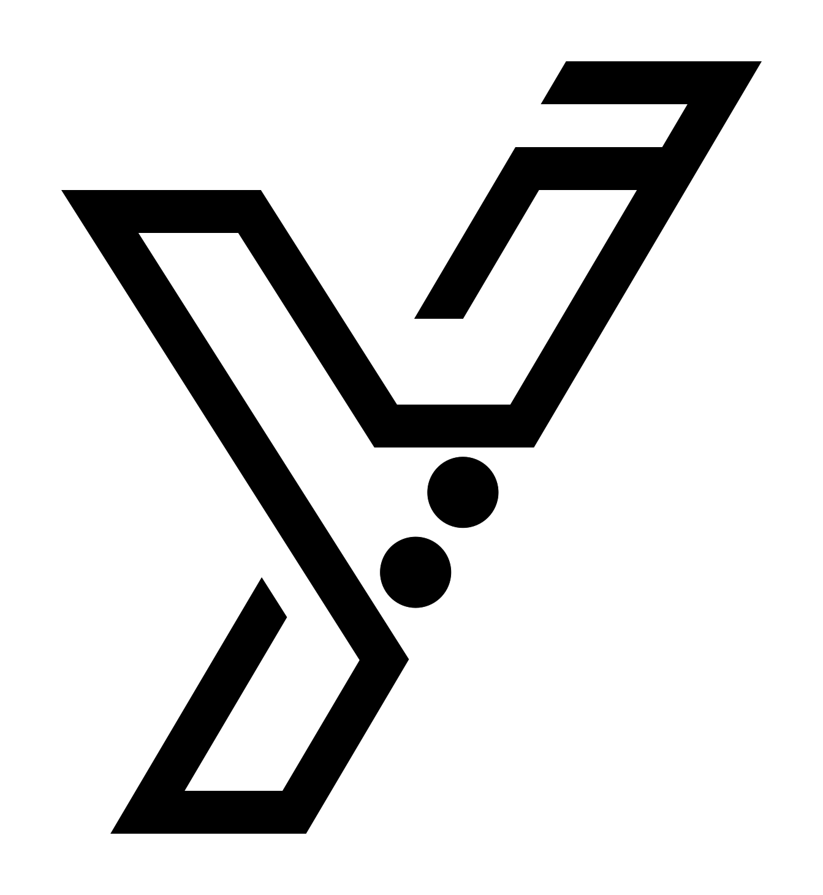

Creative Agency Landing Page
01A clean agency-style landing page with services and portfolio sections.

SOFTWARE DEVELOPER · CAIRO, EGYPT
I build websites, Python scripts, and practical software that helps people work smarter.
From business websites to custom tools, I turn clear requirements into useful digital products.
SELECTED WORK
13 live projects across websites, e-commerce, and networking courses. Open any project to explore it.
A clean agency-style landing page with services and portfolio sections.
A creative agency template with responsive sections and portfolio gallery.
A multi-section website template with articles, features, and dashboard-style content.
A responsive website built with Bootstrap components and layout utilities.
A learning platform interface for browsing courses and educational content.
An Arabic course listing page for browsing educational content.
A shopping interface with product cards, cart items, and total calculation.
A dashboard interface with navigation, statistics, tasks, and project tables.
An online shop layout with product listings and shopping sections.
An interactive landing page with color settings and page customization controls.
An online store with product categories, featured items, and a shopping cart.
An Arabic learning hub with 26 organized lessons covering Windows Server and MCSA topics.
An Arabic CCNA course covering networking fundamentals, subnetting, Cisco devices, and routing.
HOW I CAN HELP
Business websites, personal portfolios, landing pages, and responsive web interfaces.
Custom scripts for repetitive tasks, file handling, data cleanup, and simple reporting workflows.
Practical systems with forms, dashboards, role-based access, and database-backed records.
Debugging, improving existing pages, adding small features, and making interfaces work better on mobile.
A LITTLE ABOUT ME
I’m Yossif Yaser, a web developer building responsive websites and interactive interfaces.
I keep learning by building projects, testing ideas, and improving the details that make software easier to use.
A GOOD PROJECT STARTS WITH A GOOD CONVERSATION
A few examples of the kind of feedback a project can earn through clear communication and careful work.
Yossif understood what I needed and kept me updated throughout. The finished website is easy to navigate, especially on mobile, and feels like it fits my business.
I had a rough idea for my portfolio but wasn't sure how to organize it. Yossif helped make the content clearer and the final page feels much more polished.
The small Python tool took a repetitive task off my plate. We agreed on what it should do first, and Yossif explained how to use it without overcomplicating things.
HAVE SOMETHING IN MIND?
Tell me what you’re trying to build, what’s not working, or what task you’d like to simplify. We can start with a clear conversation.
Email Me↗